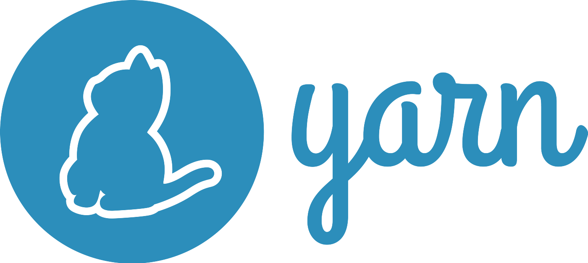
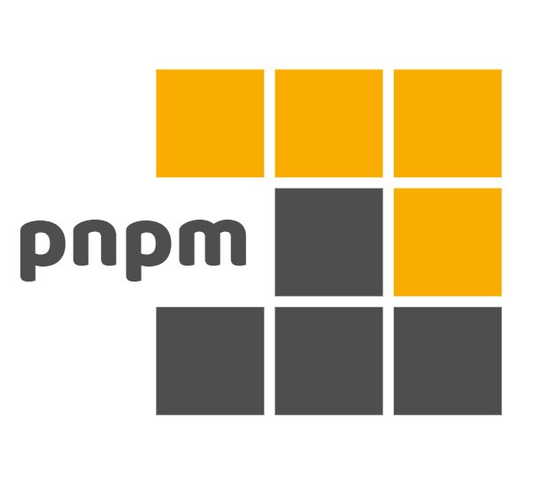
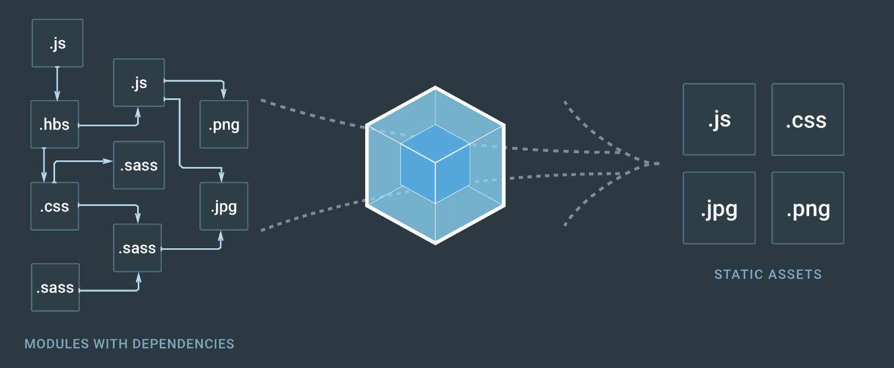

Современная frontend разработка использует большое количество инструментов, которые:
Модули на уровне языка появились только в стандарте ES2015
Поэтому программисты выкручивались разными способами:
Обзор эволюции модулей в JavaScript
lib.cjs и main.cjs в папке part-01.cjs, подробнее о выборе системы модулейА так выглядят модули согласно стандарту ES2015
// calc.js
let notExported = "whatever";
export function square(x) {
return x * x;
}
export const MY_CONSTANT = 123;
export default function () {
/* noop */
}
// main.js
import noop from "calc";
import { square } from "calc";
console.log(square(3));
noop();
Пакетам в npm принято ставить версию, согласно семантическому версионированию
Пример версии — 2.11.165-beta
В номере версии MAJOR.MINOR.PATCH увеличивается
Можно добавлять теги для пред-релизов, экспериментов, и другой метаинформации
part-02 выполни npm init, соглашайся на все значения по умолчанию. В результате npm создаст файл с конфигурацией пакета — package.jsonnpm install --save-dev uvu@0.5.2 — эта библиотека вскоре понадобитсяnode_modules — там установленные модулиpackage.json. Убедись, что package.json зафиксирована зависимость от установленных пакетовpackage-lock.jsonРазделы package.json, отвечающие за зависимости
dependencies — пакеты, которые нужны всегда. При установке добавляем флаг --save. по умолчанию добавляется для всех пакетов.devDependencies — пакеты, которые нужны только для разработки. При установке добавляем флаг --save-devpeerDependencies — требования к другим зависимостям. Так пакет с плагином для jQuery может потребовать, чтобы его устанавливали только вместе с jQuery 3.0 и вышеПакеты можно устанавливать в папку с проектом
npm install prettier
или глобально в систему — они попадут в специальную папку
npm install -g prettier
В реальной разработке, если проект не новый, то все нужные пакеты уже записаны в package.json.
Остается только запустить команду npm i (это краткая запись для npm install) и все зависимости из package.json
установятся с указанными версиями библиотек
Подробности про npm и package.json
 
Минималистичная библиотека uvu уже установлена
part-02/tests/example.mjsnode tests/example.mjs//Поправь в package.json
"scripts": { "test": "uvu tests" }
npm testnode_modulespackage.json пакета uvu указано какой из скриптов выполнять по умолчаниюtests/add.mjs создай тест, проверяющий, что add('2', '2') это 4npm testsrc/math.mjs)part-03npm install --save-dev prettierecho {} > .prettierrc.jsonsrc/game.mjsnpx prettier --write src.prettierrc.jsoneslint нужен для проверки кода на соответствие набору (обычно семантических правил)
part-03 выполни npm install eslint --save-devnpx eslint --init:game.mjs, опции для запуска ищи здесьВозможный источник ошибок – проверка ненужных файлов:
Для этого существует специальный файл настроек — .eslintignore – в нем описываются правила игнорирования при проверке
Чтобы ошибки проверялись при написании кода надо подключить ESLint к твоей любимой IDE:
Современный фронтенд код не всегда можно использовать прямо в браузере пользователя, да и браузеры бывают разные, скачивать много мелких модулей долго, к тому же jsx и typescript браузер тоже не понимает. Такого рода проблемы решаются различными сборщиками и компиляторами

part-04 выполни npm installwebpack.config.js и замени в нем строки на нужные, чтобы из файла src/index.js получился dist/main.jsnpx webpack --config webpack.config.js и открой в браузере файл index.htmlscripts в package.json, добавь туда: "build": "webpack"npm run buildСейчас в коде есть ошибка, но отлаживать непонятный main.js в браузере неприятно. Поэтому сгенерируй sourcemap:
mode со значением developmentdevtool со значением source-mapВ разработке часто полезно иметь возможность автоматически пересобирать бандл, когда происходит изменение исходного кода
Для этого в webpack есть несколько вариантов, самый простой из них — наблюдение:
"watch": "webpack --watch"npm run watch webpack будет следить за файламиprimes.js и перезагрузить страницуБраузеры и даже Node.js часто не знают новомодных фич стандарта. Можно ли их использовать?
Можно с помощью Babel, превращающего новый JS в старый
Babel – это транспайлер, как компилятор, только структура программы не меняется
npm install -D babel-loader @babel/core @babel/preset-envwebpack.config.js как написано здесьpreset-env умеет выбирать набор трансформаций по базе поддержки фич в браузерах с помощью browserslistpackage.json поле browserslist со значением IE 11Обычно в командах уже настроено всё что нужно, будь то webpack, rollup или vite, а для новых проектов выбирают шаблон, например create-react-app
Перейди в папку part-05 и выполни в ней команду npx create-react-app my-app --template typescript
CRA создает окружение в котором есть много полезных вещей:
npm start, тестирования npm test и сборки в прод npm run buildПо умолчанию большая часть конфигурации скрыта от пользователя, чтобы увидеть внутренности можно выполнить npm run eject
Хитрая спецификация, которая позволяет гарантировать уникальность стилей не прибегая к BEM
CRA поддерживает эту возможность для файлов с расширением .module.css
Благодаря этой, можно использовать понятные названия стилей в файлах, а при сборке они автоматически преобразуются во что-то вида Button_error_ax7yz
Не смотря на то, что на React мы обычно делаем SPA, нам всё равно нужны "виртуальные" страницы
Для реализации роутинга есть много библиотек, но мы посмотрим на react-router
Перейди на https://reactrouter.com/docs/en/v6/getting-started/tutorial продолжать будем там
Перейди в part-06 и следуй инструкциям из README.md